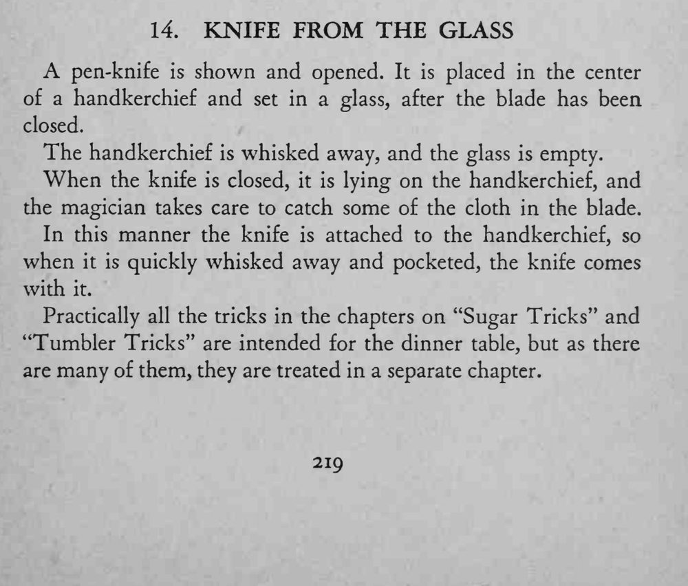
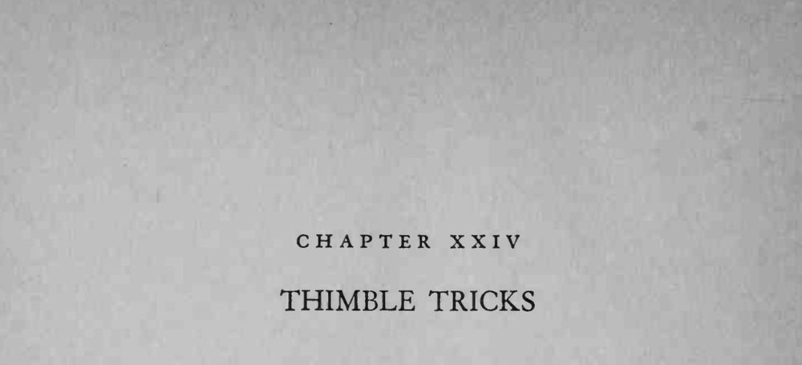

小刀放在手帕中央、一并放进玻璃杯，手帕一抽，杯里空了，刀也不见了。
合刀时一定要夹住手帕布，抽得越快越干净，动作要连贯不犹豫。


A pen-knife is shown and opened. It is placed in the center of a handkerchief and set in a glass, after the blade has been closed. The handkerchief is whisked away, and the glass is empty. When the knife is closed, it is lying on the handkerchief, and the magician takes care to catch some of the cloth in the blade. In this manner the knife is attached to the handkerchief, so when it is quickly whisked away and pocketed, the knife comes with it. Practically all the tricks in the chapters on "Sugar Tricks" and "Tumbler Tricks" are intended for the dinner table, but as there are many of them, they are treated in a separate chapter.